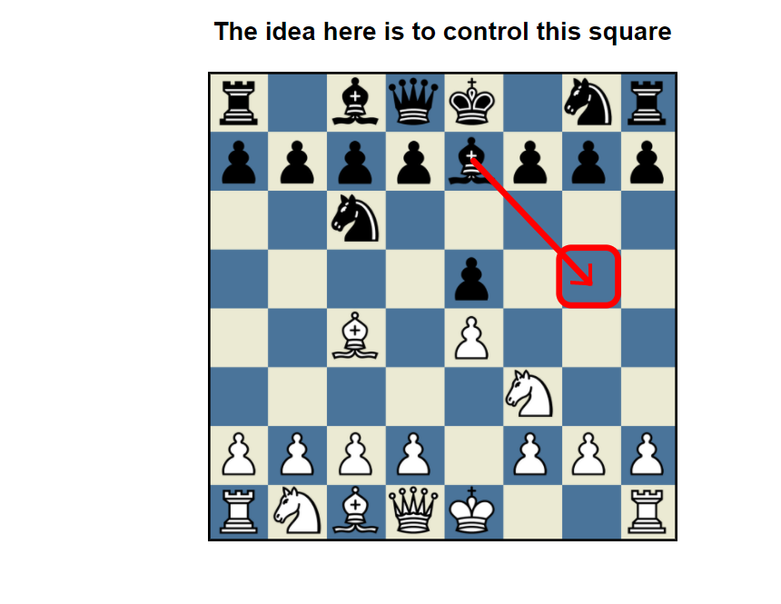

The Italian Game is divided into three major categories based on Black's response The Hungarian Defense The Two Knights Defense And the Giuoco Piano
The idea is to control this square
In the Hungarian Defense, Black plays 3...Be7, mainly to prevent White from doing a Fried Liver Attack.

The idea behind the Two Knights Defense...
In the Two Knights Defense, Black lets White go for an attack with 4. Ng5 but can gain the initiative.
The idea behind the Guioco Piano...
While in the Giuoco Piano, Black and White both have imbalances they try to exploit.
 Return to the main page
Return to the main page